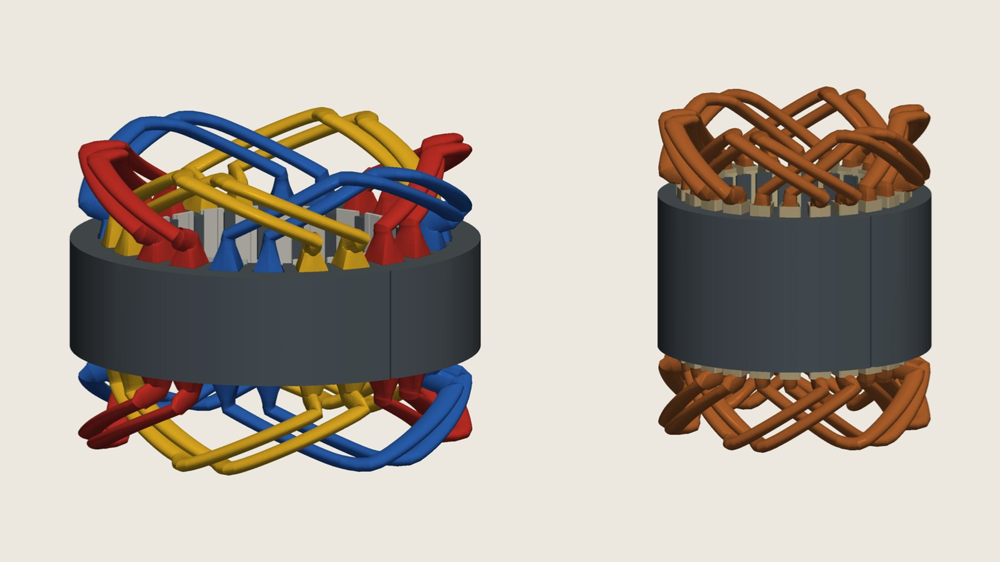
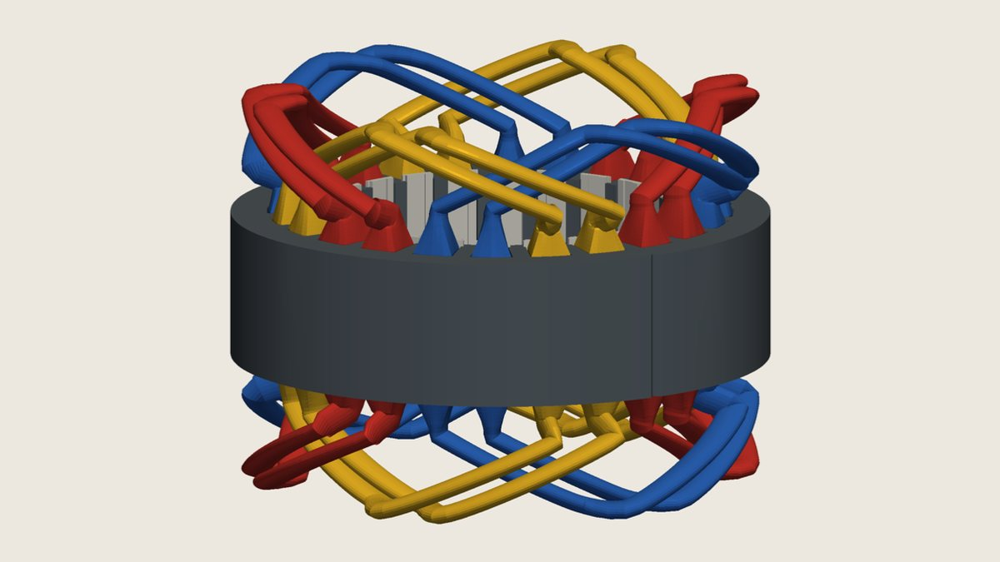
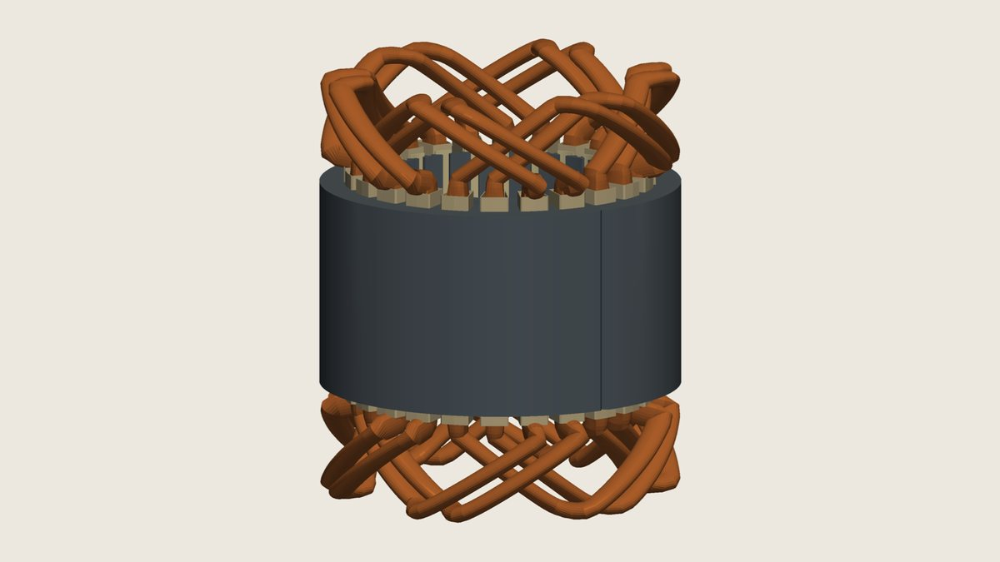
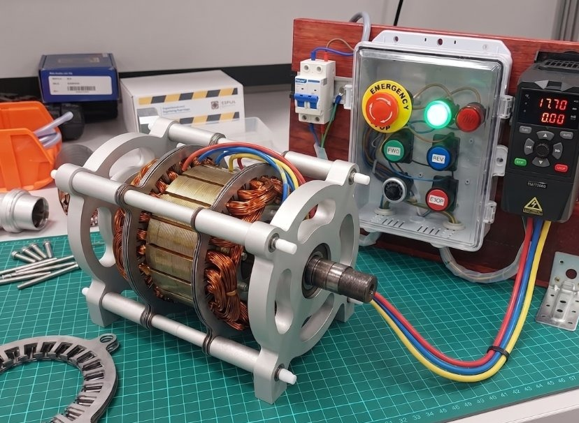

Winding kits
Two printed copies of the trainer stator for the steps before the real core. Level 1 shows the MTM-04 winding at 1.5× in coloured wire. Level 2 is the real slot at full size, wound with enamelled copper, liners and wedges, so trainees practise before they wind the laminated core.

Three levels, one winding
Every level winds the same 24-slot, 4-pole winding of MTM-04 Wind, in the same order. Only the material gets closer to the real motor.

Level 1 · MSK-IMRound-Wire Stator Kit: see the windingThe trainer stator at 1.5× scale, wound with coloured wire: red, yellow and blue for the three phases. Trainees follow every coil from slot to slot and see the end turns cross, before they touch copper.
Level 2 · MWK-IMWinding Practice Kit: practise the hand workThe trainer stator at full size, with the real slot opening. Trainees wind the full MTM-04 winding in enamelled copper on the lab winding machine, with real slot liners and wedges.
Level 3 · MAK-IMThe laminated core: wind the real motorThe stacked steel core of the Motor Assembly Kit. Trainees wind it, test it and run it in MTM-05-IM Drive.Round-Wire Stator Kit: see the winding
A demo kit for a class: twelve coils in three colours on a large printed stator, wound, inserted, connected and tested in one or two sessions.
- Stator
- 24 slots, 4 poles, Ø186 mm, 50 mm stack (1.5× the trainer)
- Winding
- The MTM-04 winding: single layer, full pitch, 12 coils, 4 in series per phase
- Coils
- 25 turns of 22 AWG wire in the phase colours, wound on a hand-crank former in the box
- Insulation
- Paper slot liners and slot wedges
- Check
- About 2.5 Ω per phase, no short between phases, star or delta at the terminal board
- Printed parts
- 55, each engraved with its code
- 1Line the slotsA paper liner in each of the 24 slots, cut and folded on the liner jig.
- 2Wind the coilsTwelve coils on the hand-crank former, four per phase, each tagged Ua to Wd.
- 3Insert them in orderCoil by coil in the MTM-04 order, with the first group lifted and dropped in last.
- 4Connect and testThe coils of each phase in series, six leads to the terminal board, then the multimeter.
Winding Practice Kit: practise the hand work
A skills kit for the bench: the same coils, slots and insulation a winder meets on the real core, on a printed stator, so the laminated core is kept for the real winding.
- Stator
- 24 slots, 4 poles, Ø124 mm, 70 mm stack: the trainer core at full size
- Slot opening
- 2.8 mm, the same as the laminated core
- Winding
- The full MTM-04 winding: 12 coils of 130 turns
- Wire
- 0.56 mm enamelled copper, about 520 m for one stator
- Insulation
- Real slot-liner paper and wedges, with the liner jig
- Machine
- Coils wound on the lab winding machine, with the kit's former
- 1Prepare the liners24 liners cut and folded to size on the jig, the cuffs formed, then fitted.
- 2Wind the coilsTwelve coils of 130 turns on the winding machine, counted, tied and tagged.
- 3Feed the slotsStrand by strand through the 2.8 mm opening, in the MTM-04 order, then close each slot with its wedge.
- 4Shape and checkEnd turns pressed and laced, the coils connected, then continuity on every phase.
Every step in 3D, for kit owners
Each kit comes with an online 3D build guide: every step piece by piece, the parts for each step, and how-to clips for the hand work: cutting and folding a liner, setting the former, winding and tying a coil, the insertion order and the connections. It runs in the browser on a laptop, a tablet or a phone.
The card in the box carries the kit number and an access code: one code per kit, for the owner and their group.
Free now: the Round-Wire Motor Viewer shows the trainer stator and its MTM-04 winding in 3D, phase by phase.
Made for MTM-04 Wind
Short answers
Are these working motors?
No. Both kits are models to wind and check with a multimeter. Never connect them to mains or a power supply. Trainees run a motor at Level 3, on the trainer's laminated core.
Why two levels before the real core?
Winding is hand work. Level 1 shows where every coil goes and in what order, in colour, at a size that is easy to see. Level 2 is the hand work itself: the real slot opening, the real wire, the real liners and wedges. When trainees reach the laminated core they have already done each step.
Do I need the trainer?
No. Each kit comes with its assembly guide and the online 3D build guide, and can be used on its own. They are made for MTM-04 Wind, so they fit straight into a class that uses the trainer.
What else do I need?
For Level 1: a multimeter, flush cutters and a wire stripper. For Level 2: a coil winding machine (the lab's, or ask us), the wire, liner paper and wedge material, which we list or supply.
When can I order?
We are testing the first printed kits with our own trainees. Register your interest below and we will tell you when orders open.
Register your interest
Tell us which kit, how many and where they go. We will tell you when orders open, and reply to questions within one working day.
WhatsApp+60 13-390 2485Fastest for quick questionsEmailhello@motoreka.myFor proposals and quotations